pacman::p_load(sf, tidyverse, tmap, performance, readxl, knitr)Take-home Exercise 3: Geospatial Analytics for Urban Sustainability
Calibrating spatial interaction models to estimate MRT station ridership and the impact of the Jurong Region Line and Cross Island Line
1 Overview
Singapore’s MRT network carries more than three million passengers a day, and two new lines will add 36 stations by 2030: the Jurong Region Line (JRL) in the west and Phase 1 of the Cross Island Line (CRL) in the east and north east. New stations are expensive to build and to run. Hume, Buangkok and Woodleigh are well known examples of stations that were built but kept closed for years because the expected ridership was too low to cover operating costs. Planners therefore need a way to estimate how many people a station will serve before it opens, and how a new station changes the ridership of the stations around it.
This exercise builds such a framework with probabilistic spatial interaction models (SIMs). A SIM explains the number of trips between two places from the size of the origin, the attractiveness of the destination and the distance between them. Following r4gdsa Chapters 15 and 16, the models are calibrated as Poisson regressions on the observed trips between every pair of existing stations in the weekday morning peak. The fitted models are then used to estimate ridership at existing stations, predict ridership at the proposed JRL and CRL stations, and measure how much the new stations take from the existing ones.
2 Research questions and objectives
- How well do station catchment characteristics and distance explain the morning peak trips between existing MRT and LRT stations?
- How many passengers are the proposed JRL and CRL stations likely to serve in the weekday morning peak?
- Which existing stations will lose part of their catchment or their passengers when the new stations open?
- (Value-added) Does the effect of distance on trip making differ from station to station across the island?
The results describe the likely scale and location of demand. They are estimates for planning discussion, not forecasts of exact passenger counts.
3 Data and study design
3.1 Data sources
| Dataset | Source | Format | Used for |
|---|---|---|---|
| Passenger Volume by Origin Destination Train Stations, September 2026 | LTA DataMall (API) | CSV | Observed trips between stations |
Train Station (RapidTransitSystemStation) |
LTA DataMall | ESRI shapefile, station polygons | Location of existing stations |
| Train Station Codes and Chinese Names | LTA DataMall | XLS | Checking station codes |
| Amendment to Master Plan 2019 Rail Station layer | URA, data.gov.sg | GeoJSON, station polygons | Location of the proposed JRL and CRL stations |
| HDB Existing Building | HDB, data.gov.sg | GeoJSON, building polygons | Location of HDB blocks |
| HDB Property Information | HDB, data.gov.sg | CSV | Number of dwelling units per block |
| Bus Stop Location | LTA DataMall | ESRI shapefile | Feeder bus access |
| Points of interest | OpenStreetMap via Geofabrik, 30 October 2026 | ESRI shapefile | Destination attractiveness |
| Master Plan 2019 Subzone Boundary (No Sea) | URA, data.gov.sg | GeoJSON | Base map |
The station lists of the two new lines follow LTA’s project pages for the Jurong Region Line and the Cross Island Line. Of the 24 JRL stations, Choa Chu Kang, Boon Lay and Jurong East are interchanges with existing lines, so 21 stations are new. Of the 12 CRL Phase 1 stations, Pasir Ris, Hougang, Ang Mo Kio and Bright Hill are interchanges, so 8 stations are new. The locations of these 29 new stations are taken from URA’s Master Plan rail station layer.
3.2 Unit of analysis and study period
The unit of analysis is the station. Every row of the spatial interaction data is one ordered pair of stations: trips that enter the network at the origin station and leave it at the destination station. Interchange stations appear in the LTA ridership data as one combined code, for example EW24/NS1 for Jurong East, and they are treated as one station.
The study period is the weekday morning peak of September 2026, from 6:00 to 9:59 (the hours 6 to 9 in the data), as in Chapter 15. The morning peak is used because trips then have a clear direction: most start near home and end near work, school or shops. This makes it reasonable to describe origins by their residential population and destinations by their activities.
4 Installing and loading R packages
Following Chapters 15 and 16, the packages used are sf for spatial data, tidyverse for data wrangling, tmap for maps, performance for model comparison and readxl for the station code table.
5 Data preparation and quality assessment
5.1 Ridership data
The ridership file is not a static download. It is requested from the LTA DataMall API with a personal account key, and the API returns a temporary link to a zip file. The code below shows how the file was obtained. It is not run when the report is rendered, because the key is personal and the API only keeps the latest three months. Anyone reproducing the analysis needs their own key, saved as the environment variable LTA_KEY.
library(httr)
res <- GET("https://datamall2.mytransport.sg/ltaodataservice/PV/ODTrain",
query = list(Date = "202609"),
add_headers(AccountKey = Sys.getenv("LTA_KEY"),
accept = "application/json"))
link <- content(res)$value[[1]]$Link
download.file(link, "data/raw/od_train.zip", mode = "wb")
unzip("data/raw/od_train.zip", exdir = "data/raw")The URA rail station layer can be downloaded without a key through the data.gov.sg API:
res <- GET("https://api-open.data.gov.sg/v1/public/api/datasets/d_9a6bdc9d93bd041eb0cfbb6a8cb3248f/poll-download")
download.file(content(res)$data$url,
"data/raw/MasterPlan2019RailStationLayerAmendment.geojson", mode = "wb")od <- read_csv("data/raw/origin_destination_train_202609.csv")
glimpse(od)Rows: 887,478
Columns: 7
$ YEAR_MONTH <chr> "2026-09", "2026-09", "2026-09", "2026-09", "2026-…
$ DAY_TYPE <chr> "WEEKENDS/HOLIDAY", "WEEKDAY", "WEEKDAY", "WEEKEND…
$ TIME_PER_HOUR <dbl> 6, 11, 14, 6, 12, 13, 9, 12, 9, 8, 17, 19, 6, 9, 1…
$ PT_TYPE <chr> "TRAIN", "TRAIN", "TRAIN", "TRAIN", "TRAIN", "TRAI…
$ ORIGIN_PT_CODE <chr> "EW12/DT14", "TE4", "CC24", "PE6", "EW20", "DT17",…
$ DESTINATION_PT_CODE <chr> "DT7", "CC11", "PE1", "SW7", "NS17/CC15", "CC5", "…
$ TOTAL_TRIPS <dbl> 14, 7, 18, 2, 6, 55, 194, 2, 46, 2, 2, 41, 3, 12, …Each row is the number of trips between two stations in one hour of one day type, summed over the month. The data cover 85,880,422 trips between 185 stations.
od %>% summarise(missing = sum(is.na(TOTAL_TRIPS)),
zero_or_negative = sum(TOTAL_TRIPS <= 0),
same_station = sum(ORIGIN_PT_CODE == DESTINATION_PT_CODE),
duplicates = sum(duplicated(select(., -TOTAL_TRIPS))))# A tibble: 1 × 4
missing zero_or_negative same_station duplicates
<int> <int> <int> <int>
1 0 0 0 0Following Chapter 15, only weekday trips in the morning peak are kept and the hourly counts are summed for each pair of stations.
flows <- od %>%
filter(DAY_TYPE == "WEEKDAY",
TIME_PER_HOUR >= 6, TIME_PER_HOUR <= 9) %>%
group_by(ORIGIN_PT_CODE, DESTINATION_PT_CODE) %>%
summarise(TRIPS = sum(TOTAL_TRIPS), .groups = "drop")
# number of weekdays in September 2026, used to express results per day
n_weekdays <- sum(!format(seq(as.Date("2026-09-01"), as.Date("2026-09-30"),
by = "day"), "%u") %in% c("6", "7"))
n_weekdays[1] 22The morning peak accounts for 19,001,903 trips in September, about 864,000 on an average weekday.
5.2 Existing stations
The LTA station layer has one polygon per station code. Its projection file describes SVY21 but has no EPSG code, so the correct code (3414) is assigned. Interchange stations have one polygon for each line.
mrt <- st_read(dsn = "data/raw", layer = "RapidTransitSystemStation") %>%
st_set_crs(3414)Reading layer `RapidTransitSystemStation' from data source
`/Users/mengxinyu/ISSS626-GAA/Take-home_Ex/Take-home_Ex03/data/raw'
using driver `ESRI Shapefile'
Simple feature collection with 234 features and 15 fields
Geometry type: MULTIPOLYGON
Dimension: XY
Bounding box: xmin: 6068.209 ymin: 27478.44 xmax: 45377.5 ymax: 47913.58
Projected CRS: SVY21codes <- read_xls("data/raw/Train Station Codes and Chinese Names.xls")
table(st_is_valid(mrt))
TRUE
234 To match the stations to the ridership codes, each ridership code (such as EW24/NS1) is split into its station codes, the polygons of those codes are merged, and the centroid of the merged polygon is used as the station location.
od_codes <- tibble(node = sort(unique(c(od$ORIGIN_PT_CODE,
od$DESTINATION_PT_CODE)))) %>%
mutate(code = str_split(node, "/")) %>%
unnest(code)
mrt_codes <- mrt %>%
mutate(code = str_split(STN_NAM, "\\s*/\\s*")) %>%
unnest(code) %>%
select(code)
# ridership codes with no polygon in the LTA layer
od_codes %>% filter(!code %in% mrt_codes$code)# A tibble: 8 × 2
node code
<chr> <chr>
1 CC17/TE9 TE9
2 CC34/DT16 CC34
3 EW16/NE3/TE17 TE17
4 NE1/CC29 NE1
5 NS27/CC33/TE20 CC33
6 NS27/CC33/TE20 TE20
7 TE11 TE11
8 TE14/NS22 TE14 Most interchange codes are found through one of their component codes. Only TE11, the Thomson-East Coast Line platform of Stevens station, has no polygon at all. It is located with the Stevens polygon from the URA layer that is farther from the Downtown Line platform (DT10).
ura <- st_read("data/raw/MasterPlan2019RailStationLayerAmendment.geojson") %>%
st_transform(3414) %>%
st_make_valid() %>%
mutate(NAME = str_trim(NAME))Reading layer `UP_G_MP19_RAIL_STN_PL' from data source
`/Users/mengxinyu/ISSS626-GAA/Take-home_Ex/Take-home_Ex03/data/raw/MasterPlan2019RailStationLayerAmendment.geojson'
using driver `GeoJSON'
Simple feature collection with 257 features and 8 fields
Geometry type: MULTIPOLYGON
Dimension: XY
Bounding box: xmin: 103.6363 ymin: 1.251433 xmax: 104.0051 ymax: 1.449548
Geodetic CRS: WGS 84stn_exist <- mrt_codes %>%
inner_join(od_codes %>% filter(code != "TE11"),
by = "code", relationship = "many-to-many") %>%
group_by(node) %>%
summarise(geometry = st_union(geometry), .groups = "drop") %>%
st_centroid() %>%
mutate(status = "Existing")
stevens <- ura %>% filter(NAME == "STEVENS INTERCHANGE") %>% st_centroid()
te11 <- stevens[which.max(as.numeric(
st_distance(stevens, filter(stn_exist, node == "DT10")))), ] %>%
transmute(node = "TE11", status = "Existing")
stn_exist <- bind_rows(stn_exist, te11) %>% arrange(node)
nrow(stn_exist)[1] 185The ridership codes are hard to read, so each station is also given its English name from the LTA code table. The three Circle Line stations that opened in 2026 (CC30 to CC32) are not yet in the table and are named by hand.
stn_names <- od_codes %>%
left_join(codes %>% select(code = stn_code, name = mrt_station_english),
by = "code") %>%
group_by(node) %>%
summarise(name = first(na.omit(name))) %>%
mutate(name = coalesce(name, c(CC30 = "Keppel", CC31 = "Cantonment",
CC32 = "Prince Edward Road")[node]))
sum(is.na(stn_names$name))[1] 0stn_exist <- stn_exist %>% left_join(stn_names, by = "node")5.3 Proposed stations
The 29 new stations are taken from URA’s rail station layer by name. The layer stores some stations as several polygons, so they are merged before the centroid is taken.
jrl <- c("CHOA CHU KANG WEST", "TENGAH", "HONG KAH", "CORPORATION",
"JURONG WEST", "BAHAR JUNCTION", "ENTERPRISE", "TUKANG",
"JURONG HILL", "JURONG PIER", "GEK POH", "TAWAS",
"NANYANG GATEWAY", "NANYANG CRESCENT", "PENG KANG HILL",
"TENGAH PLANTATION", "TENGAH PARK", "BUKIT BATOK WEST",
"TOH GUAN", "JURONG TOWN HALL", "PANDAN RESERVOIR")
crl <- c("AVIATION PARK", "LOYANG", "PASIR RIS EAST", "TAMPINES NORTH",
"DEFU", "SERANGOON NORTH", "TAVISTOCK", "TECK GHEE")
stn_new <- ura %>%
filter(NAME %in% c(jrl, crl)) %>%
group_by(NAME) %>%
summarise(geometry = st_union(geometry), .groups = "drop") %>%
st_centroid() %>%
transmute(node = NAME, name = str_to_title(NAME),
status = if_else(NAME %in% jrl, "JRL", "CRL"))
count(st_drop_geometry(stn_new), status)# A tibble: 2 × 2
status n
<chr> <int>
1 CRL 8
2 JRL 21setdiff(c(jrl, crl), stn_new$node)character(0)All 29 names are found. The seven interchanges with the new lines (Choa Chu Kang, Boon Lay, Jurong East, Pasir Ris, Hougang, Ang Mo Kio and Bright Hill) keep their existing codes and are treated as existing stations.
5.4 HDB dwelling units
The number of homes near a station is the main measure of how many trips a station can generate in the morning. The HDB building layer has the location of each block but no number of dwelling units. The property table has the number of dwelling units but no location. The two have to be joined by block number and street. This is not straightforward, because the building layer stores the street as a short code (for example ANA03L for an Ang Mo Kio avenue) rather than its name.
hdb_bldg <- st_read("data/raw/HDBExistingBuilding.geojson") %>%
st_transform(3414) %>%
st_make_valid()Reading layer `HDB_ACTIVE_BLK_P' from data source
`/Users/mengxinyu/ISSS626-GAA/Take-home_Ex/Take-home_Ex03/data/raw/HDBExistingBuilding.geojson'
using driver `GeoJSON'
Simple feature collection with 13436 features and 9 fields
Geometry type: MULTIPOLYGON
Dimension: XY
Bounding box: xmin: 103.6848 ymin: 1.270005 xmax: 103.989 ymax: 1.457245
Geodetic CRS: WGS 84hdb_info <- read_csv("data/raw/HDBPropertyInformation.csv") %>%
filter(residential == "Y")
c(buildings = nrow(hdb_bldg), residential_blocks = nrow(hdb_info)) buildings residential_blocks
13436 10817 Inspecting the codes shows that the first two letters are taken from the main word of the street name, after short forms such as BT (Bukit) are expanded and generic words such as JLN (Jalan) or LOR 1 (Lorong 1) are dropped. The third letter usually matches the first letter of another word in the street name. Blocks are matched on block number plus the first two letters, and the third letter is used to choose between candidates. When a block still matches more than one building, its dwelling units are shared equally between them.
abbr <- c("^BT " = "BUKIT ", "^C'WEALTH" = "COMMONWEALTH",
"^NTH " = "NORTH ", "^STH " = "SOUTH ", "^UPP " = "UPPER ",
"^TG " = "TANJONG ", "^KG " = "KAMPONG ", "^JLN " = "JALAN ",
"^LOR " = "LORONG ", " BT " = " BUKIT ")
generic <- "^(JALAN|LORONG|KAMPONG|TANJONG)\\s+(\\d+\\s+)?"
hdb_info <- hdb_info %>%
mutate(full = str_replace_all(street, abbr),
core = str_remove(full, generic),
key_a = str_sub(full, 1, 2),
key_b = str_sub(core, 1, 2),
letters3 = map_chr(core, ~ paste(unique(c(
str_sub(.x, 3, 3),
str_sub(str_split(.x, " ")[[1]][-1], 1, 1))), collapse = "")))
bldg_keys <- hdb_bldg %>%
st_drop_geometry() %>%
transmute(OBJECTID, BLK_NO,
p2 = str_sub(ST_COD, 1, 2), p3 = str_sub(ST_COD, 3, 3))
hdb_match <- bind_rows(
hdb_info %>% transmute(blk_no, street, letters3, p2 = key_a),
hdb_info %>% transmute(blk_no, street, letters3, p2 = key_b)) %>%
distinct() %>%
inner_join(bldg_keys, by = c("blk_no" = "BLK_NO", "p2"),
relationship = "many-to-many") %>%
distinct(blk_no, street, OBJECTID, p3, letters3) %>%
mutate(score = str_detect(letters3, fixed(p3))) %>%
group_by(blk_no, street) %>%
filter(score == max(score)) %>%
mutate(share = 1 / n()) %>%
ungroup() %>%
left_join(hdb_info %>% select(blk_no, street, total_dwelling_units),
by = c("blk_no", "street")) %>%
group_by(OBJECTID) %>%
summarise(du = sum(total_dwelling_units * share))
hdb_pt <- hdb_bldg %>%
inner_join(hdb_match, by = "OBJECTID") %>%
st_point_on_surface() %>%
select(du)
c(units_matched = sum(hdb_pt$du),
units_total = sum(hdb_info$total_dwelling_units),
share = sum(hdb_pt$du) / sum(hdb_info$total_dwelling_units))units_matched units_total share
1.170985e+06 1.179156e+06 9.930705e-01 99.3% of all HDB dwelling units are matched to a building. Most of the unmatched units are in blocks completed recently, such as those along Tengah Garden Avenue, which are not yet in the building layer. This matters for Tengah, one of the new JRL stations, and is discussed in the limitations.
5.5 Points of interest
OpenStreetMap points of interest (POIs) describe what a station area offers. Geofabrik provides them as points and as polygons (for example a mall drawn as an outline). Polygons are converted to a point inside the shape, and both layers are clipped to Singapore. Street furniture such as benches, waste baskets, vending machines and post boxes is removed. The remaining POIs are grouped, and the retail, food and finance group (Geofabrik codes 23xx, 25xx and 26xx) is used as the destination attraction.
mpsz <- st_read("data/raw/MasterPlan2019SubzoneBoundaryNoSeaGEOJSON.geojson") %>%
st_transform(3414) %>%
st_make_valid()Reading layer `URA_MP19_SUBZONE_NO_SEA_PL' from data source
`/Users/mengxinyu/ISSS626-GAA/Take-home_Ex/Take-home_Ex03/data/raw/MasterPlan2019SubzoneBoundaryNoSeaGEOJSON.geojson'
using driver `GeoJSON'
Simple feature collection with 332 features and 13 fields
Geometry type: MULTIPOLYGON
Dimension: XY
Bounding box: xmin: 103.6057 ymin: 1.158699 xmax: 104.0885 ymax: 1.470775
Geodetic CRS: WGS 84sg <- st_union(mpsz)
poi <- bind_rows(
st_read("data/raw", "gis_osm_pois_free_1"),
st_read("data/raw", "gis_osm_pois_a_free_1") %>%
st_make_valid() %>% st_point_on_surface()) %>%
st_transform(3414) %>%
st_filter(sg) %>%
filter(code < 2900, !code %in% c(2003, 2005, 2030:2036, 2701)) %>%
mutate(group = case_when(code %/% 100 %in% c(23, 25, 26) ~ "Retail, food and finance",
code %in% 2081:2084 ~ "Education",
TRUE ~ "Other services"))Reading layer `gis_osm_pois_free_1' from data source
`/Users/mengxinyu/ISSS626-GAA/Take-home_Ex/Take-home_Ex03/data/raw'
using driver `ESRI Shapefile'
Simple feature collection with 108841 features and 4 fields
Geometry type: POINT
Dimension: XY
Bounding box: xmin: 99.66105 ymin: 0.9383007 xmax: 119.2139 ymax: 7.507101
Geodetic CRS: WGS 84
Reading layer `gis_osm_pois_a_free_1' from data source
`/Users/mengxinyu/ISSS626-GAA/Take-home_Ex/Take-home_Ex03/data/raw'
using driver `ESRI Shapefile'
Simple feature collection with 64468 features and 4 fields
Geometry type: MULTIPOLYGON
Dimension: XY
Bounding box: xmin: 99.66072 ymin: 0.961908 xmax: 119.0683 ymax: 7.510638
Geodetic CRS: WGS 84count(st_drop_geometry(poi), group) group n
1 Education 902
2 Other services 14798
3 Retail, food and finance 180015.6 Bus stops
bus <- st_read("data/raw", "BusStop") %>% st_set_crs(3414)Reading layer `BusStop' from data source
`/Users/mengxinyu/ISSS626-GAA/Take-home_Ex/Take-home_Ex03/data/raw'
using driver `ESRI Shapefile'
Simple feature collection with 5205 features and 15 fields
Geometry type: POINT
Dimension: XY
Bounding box: xmin: 3953.168 ymin: 26001.96 xmax: 49889.35 ymax: 52992.58
Projected CRS: SVY21nrow(bus)[1] 5205Bus stops near a station measure how easily people further away can reach it by feeder bus.
5.7 Station catchments and attributes
Each HDB block, POI and bus stop is assigned to its nearest station, but only if that station is within 800 m. 800 m is roughly a ten-minute walk, the distance LTA uses as a target for station access. Assigning each feature to one station only avoids counting the same homes for two neighbouring stations. It also makes the effect of a new station visible: when a new station is closer to some homes than the existing one, those homes move to the new station’s catchment.
station_attributes <- function(stations, radius = 800) {
nearest <- function(pts) {
i <- st_nearest_feature(pts, stations)
d <- as.numeric(st_distance(pts, stations[i, ], by_element = TRUE))
if_else(d <= radius, i, NA_integer_)
}
i_hdb <- nearest(hdb_pt)
i_poi <- nearest(filter(poi, group == "Retail, food and finance"))
i_bus <- nearest(bus)
n <- nrow(stations)
tibble(node = stations$node,
DU = as.numeric(replace_na(
tapply(hdb_pt$du, factor(i_hdb, levels = seq_len(n)), sum), 0)),
RETAIL = tabulate(i_poi, n),
BUS = tabulate(i_bus, n))
}Two more station attributes describe each station’s position in the network. LINES is the number of lines that serve the station: an interchange gives direct access to more destinations. LRT marks the light rail stations, which serve short feeder trips and carry far fewer passengers than MRT stations.
network_attributes <- function(nodes) {
tibble(node = nodes,
LINES = str_count(nodes, "/") + 1,
LRT = as.integer(str_detect(nodes, "^(BP|SW|SE|PW|PE|STC|PTC)\\d*$")))
}The origin table (task 2) and the destination table (task 3) for the existing network are built below. The origin table holds the local market potential: dwelling units, bus stops and the network attributes. The destination table holds the observed number of passengers leaving each station and the attraction variables.
attr_exist <- station_attributes(stn_exist) %>%
left_join(network_attributes(stn_exist$node), by = "node")
origins <- attr_exist %>%
transmute(ORIGIN = node, O_DU = DU, O_BUS = BUS,
O_LINES = LINES, O_LRT = LRT)
destinations <- attr_exist %>%
transmute(DESTIN = node, D_DU = DU, D_RETAIL = RETAIL, D_BUS = BUS,
D_LINES = LINES, D_LRT = LRT) %>%
left_join(flows %>% group_by(DESTIN = DESTINATION_PT_CODE) %>%
summarise(OBS_RIDERSHIP = sum(TRIPS)), by = "DESTIN")
head(origins)# A tibble: 6 × 5
ORIGIN O_DU O_BUS O_LINES O_LRT
<chr> <dbl> <int> <dbl> <int>
1 BP10 4065 7 1 1
2 BP11 5559 6 1 1
3 BP12 6181 14 1 1
4 BP13 5984 13 1 1
5 BP2 10101 27 1 1
6 BP3 7456 18 1 1head(destinations)# A tibble: 6 × 7
DESTIN D_DU D_RETAIL D_BUS D_LINES D_LRT OBS_RIDERSHIP
<chr> <dbl> <int> <int> <dbl> <int> <dbl>
1 BP10 4065 15 7 1 1 9280
2 BP11 5559 6 6 1 1 6804
3 BP12 6181 52 14 1 1 13866
4 BP13 5984 21 13 1 1 3213
5 BP2 10101 26 27 1 1 6708
6 BP3 7456 23 18 1 1 7493c(dwelling_units_within_800m = sum(origins$O_DU),
share_of_all_units = sum(origins$O_DU) / sum(hdb_pt$du),
stations_with_no_hdb = sum(origins$O_DU == 0))dwelling_units_within_800m share_of_all_units
8.537845e+05 7.291165e-01
stations_with_no_hdb
4.700000e+01 About 73% of HDB homes are within 800 m of an existing station. 47 stations have no HDB block within 800 m. Most are in the city centre, in industrial areas or at the airport.
5.8 Spatial interaction data frames
The spatial interaction data frame (task 1) has one row for every ordered pair of different stations. Pairs with no recorded trips are kept with zero trips, because a Poisson model has to see where trips do not happen as well as where they do. Distance is the straight-line distance between station centroids, as in Chapter 16.
Following Chapter 16, attribute values of zero are replaced by 0.99 so that their logarithm can be taken.
build_sim <- function(stations, attr) {
dm <- st_distance(stations)
dimnames(dm) <- list(stations$node, stations$node)
expand_grid(ORIGIN = stations$node, DESTIN = stations$node) %>%
filter(ORIGIN != DESTIN) %>%
mutate(dist = as.numeric(dm[cbind(ORIGIN, DESTIN)])) %>%
left_join(attr %>% rename_with(~ paste0("O_", .x), -node),
by = c("ORIGIN" = "node")) %>%
left_join(attr %>% rename_with(~ paste0("D_", .x), -node),
by = c("DESTIN" = "node")) %>%
mutate(across(c(O_DU, O_RETAIL, O_BUS, D_DU, D_RETAIL, D_BUS),
~ if_else(.x == 0, 0.99, .x)))
}
sim_exist <- build_sim(stn_exist, attr_exist) %>%
left_join(flows, by = c("ORIGIN" = "ORIGIN_PT_CODE",
"DESTIN" = "DESTINATION_PT_CODE")) %>%
mutate(TRIPS = replace_na(TRIPS, 0))
glimpse(sim_exist)Rows: 34,040
Columns: 14
$ ORIGIN <chr> "BP10", "BP10", "BP10", "BP10", "BP10", "BP10", "BP10", "BP10…
$ DESTIN <chr> "BP11", "BP12", "BP13", "BP2", "BP3", "BP4", "BP5", "BP6/DT1"…
$ dist <dbl> 379.8178, 744.7561, 964.0719, 2881.2637, 2511.3869, 2096.5840…
$ O_DU <dbl> 4065, 4065, 4065, 4065, 4065, 4065, 4065, 4065, 4065, 4065, 4…
$ O_RETAIL <dbl> 15, 15, 15, 15, 15, 15, 15, 15, 15, 15, 15, 15, 15, 15, 15, 1…
$ O_BUS <dbl> 7, 7, 7, 7, 7, 7, 7, 7, 7, 7, 7, 7, 7, 7, 7, 7, 7, 7, 7, 7, 7…
$ O_LINES <dbl> 1, 1, 1, 1, 1, 1, 1, 1, 1, 1, 1, 1, 1, 1, 1, 1, 1, 1, 1, 1, 1…
$ O_LRT <int> 1, 1, 1, 1, 1, 1, 1, 1, 1, 1, 1, 1, 1, 1, 1, 1, 1, 1, 1, 1, 1…
$ D_DU <dbl> 5559.00, 6181.00, 5984.00, 10101.00, 7456.00, 2931.00, 2652.0…
$ D_RETAIL <dbl> 6, 52, 21, 26, 23, 10, 3, 85, 25, 23, 20, 42, 140, 24, 19, 19…
$ D_BUS <dbl> 6, 14, 13, 27, 18, 11, 5, 14, 9, 13, 9, 21, 17, 22, 18, 19, 2…
$ D_LINES <dbl> 1, 1, 1, 1, 1, 1, 1, 2, 1, 1, 1, 2, 1, 1, 1, 1, 2, 2, 1, 1, 1…
$ D_LRT <int> 1, 1, 1, 1, 1, 1, 1, 0, 1, 1, 1, 0, 0, 0, 0, 0, 0, 0, 0, 0, 0…
$ TRIPS <dbl> 266, 1121, 305, 240, 293, 329, 1008, 14825, 696, 2833, 888, 0…sim_exist %>% summarise(pairs = n(),
share_zero_trips = mean(TRIPS == 0),
trips = sum(TRIPS),
min_dist = min(dist),
max_dist = max(dist))# A tibble: 1 × 5
pairs share_zero_trips trips min_dist max_dist
<int> <dbl> <dbl> <dbl> <dbl>
1 34040 0.147 19001903 53.4 39169.The second data frame adds the 29 new stations. The catchments are recomputed with all 214 stations, so homes and shops closer to a new station move to it. The number of lines at the seven interchanges is kept unchanged, so that the comparison isolates the effect of the new stations themselves.
stn_future <- bind_rows(stn_exist, stn_new)
attr_future <- station_attributes(stn_future) %>%
left_join(network_attributes(stn_future$node), by = "node")
sim_future <- build_sim(stn_future, attr_future)
nrow(sim_future)[1] 455826 Analytical assumptions and methodological decisions
6.1 Morning peak only
Trips in the morning peak are mostly home-based, which is what lets origins be described by homes and destinations by activities. The evening peak is roughly the reverse. Weekend trips are more varied and would need different attraction variables.
6.2 Catchment rule
Homes, shops and bus stops are assigned to the nearest station within 800 m. In reality, people do not always use their nearest station, and many live beyond 800 m and arrive by bus. The bus stop count partly captures this. The rule is simple, applied the same way to existing and new stations, and makes catchment changes easy to see.
6.3 Distance
Distance is the straight-line distance between stations, as in Chapter 16. Train travel time would be better, because the network is not a straight line, but it is not available for stations that do not exist yet. A straight line favours trips that the network actually serves indirectly, for example across the Central Catchment.
6.4 Which model is used for which task
Chapter 16 calibrates four forms of the model:
- the unconstrained model, which uses attributes at both ends and distance;
- the origin-constrained model, which replaces the origin attributes with one fixed term per origin station, so that the total trips from each origin are reproduced;
- the destination-constrained model, which does the same for destinations; and
- the doubly constrained model, with fixed terms for both ends.
The constrained models fit the existing data better, because each station gets its own term. But a station that does not exist yet has no observed trips and therefore no fixed term, so the constrained models cannot predict it. The unconstrained model is the only one that predicts trips from attributes alone. It is therefore used to predict ridership at the new stations.
To measure the impact on existing stations, the origin-constrained model is used in its probabilistic form. Each origin’s observed total is kept fixed, and its trips are shared among all destinations in proportion to each destination’s attraction and distance. When new destinations are added, they take a share, and the loss at each existing destination can be measured. This is the same logic as a market share model.
6.5 Zero values and overdispersion
Replacing zeros by 0.99 follows Chapter 16 but treats a station with no homes almost the same as one with a single home. Trip counts are also much more variable than a Poisson model assumes. This does not bias the coefficients, but it makes their standard errors far too small. The p-values below are therefore not used to judge which variables matter. The size and sign of the coefficients and the fit statistics are used instead.
7 Geovisualisation of current ridership
7.1 Station network
tmap_mode("plot")
stn_map <- bind_rows(stn_exist, stn_new) %>%
mutate(status = factor(status, levels = c("Existing", "JRL", "CRL")))
tm_shape(mpsz) +
tm_polygons(fill = "grey95", col = "grey80", lwd = 0.3) +
tm_shape(stn_map) +
tm_dots(fill = "status", size = 0.35,
fill.scale = tm_scale_categorical(
values = c("grey40", "#0099aa", "#97c616")),
fill.legend = tm_legend(title = "Station",
position = tm_pos_in("right", "bottom"))) +
tm_title("Existing stations and proposed JRL and CRL stations")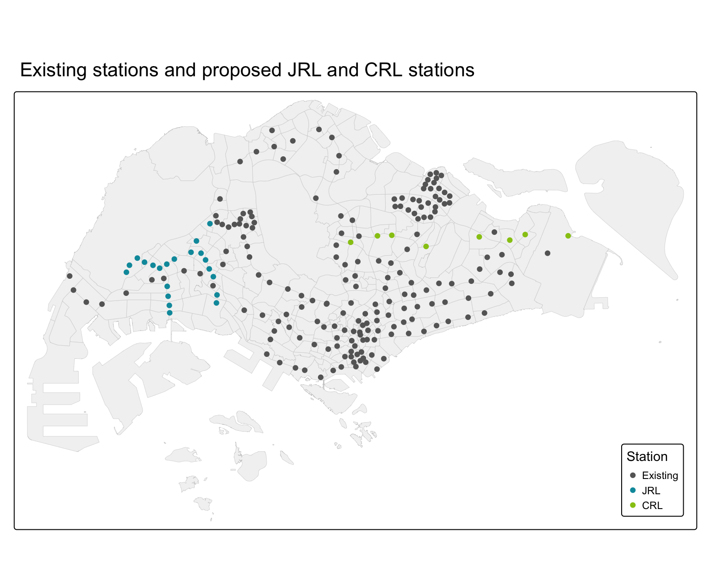
The grey dots are the 185 existing MRT and LRT stations. The 21 new JRL stations (teal) fill the gap in the west, between Choa Chu Kang, Jurong East and Boon Lay, and reach Nanyang Technological University and the Jurong industrial estate. The 8 new CRL stations (green) run from Changi through Loyang, Pasir Ris and Tampines North to Serangoon North and Ang Mo Kio. Unlike the JRL, the CRL passes through areas that already have stations nearby, so it is more likely to compete with existing stations for the same passengers.
7.2 Observed morning peak ridership
ridership_obs <- stn_exist %>%
left_join(flows %>% group_by(node = ORIGIN_PT_CODE) %>%
summarise(tap_in = sum(TRIPS) / n_weekdays), by = "node") %>%
left_join(flows %>% group_by(node = DESTINATION_PT_CODE) %>%
summarise(tap_out = sum(TRIPS) / n_weekdays), by = "node")
tap_in_map <- tm_shape(mpsz) +
tm_polygons(fill = "grey95", col = "grey80", lwd = 0.3) +
tm_shape(ridership_obs) +
tm_bubbles(size = "tap_in", fill = "#d7301f", fill_alpha = 0.6, col = "white",
size.scale = tm_scale_continuous(values.scale = 1.4),
size.legend = tm_legend(title = "Entries per weekday")) +
tm_title("Where passengers enter (6:00 to 9:59)")
tap_out_map <- tm_shape(mpsz) +
tm_polygons(fill = "grey95", col = "grey80", lwd = 0.3) +
tm_shape(ridership_obs) +
tm_bubbles(size = "tap_out", fill = "#2c7fb8", fill_alpha = 0.6, col = "white",
size.scale = tm_scale_continuous(values.scale = 1.4),
size.legend = tm_legend(title = "Exits per weekday")) +
tm_title("Where passengers exit (6:00 to 9:59)")
tmap_arrange(tap_in_map, tap_out_map, ncol = 1)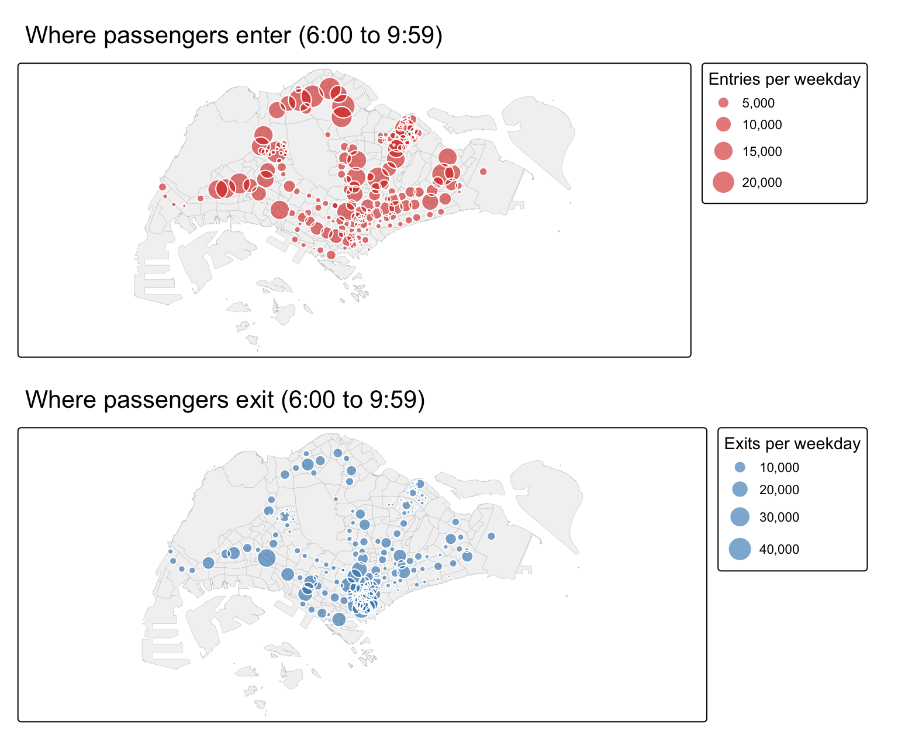
The two maps show the morning commute. Entries (red) are spread across the residential towns: Woodlands, Admiralty and Yishun in the north, Choa Chu Kang and Boon Lay in the west, Tampines and Pasir Ris in the east, and Serangoon, Sengkang and Punggol in the north east. Exits (blue) are concentrated in fewer places, above all the Central Business District (Raffles Place, Tanjong Pagar, Outram Park) and the regional centre at Jurong East. The contrast supports the choice of variables: homes explain where trips start, and activities explain where they end.
ridership_obs %>% st_drop_geometry() %>%
arrange(desc(tap_in)) %>% slice(1:5) %>% select(name, tap_in)# A tibble: 5 × 2
name tap_in
<chr> <dbl>
1 Yishun 21885.
2 Woodlands 20740.
3 Admiralty 20384.
4 Serangoon 20189.
5 Sengkang 20076.ridership_obs %>% st_drop_geometry() %>%
arrange(desc(tap_out)) %>% slice(1:5) %>% select(name, tap_out)# A tibble: 5 × 2
name tap_out
<chr> <dbl>
1 Raffles Place 40569.
2 Jurong East 25872.
3 Tanjong Pagar 24295.
4 Novena 19051.
5 Outram Park 18760.7.3 Main flows
xy <- st_coordinates(stn_exist)
rownames(xy) <- stn_exist$node
top_flows <- sim_exist %>% arrange(desc(TRIPS)) %>% slice(1:300)
flow_lines <- st_sfc(map2(top_flows$ORIGIN, top_flows$DESTIN,
~ st_linestring(rbind(xy[.x, ], xy[.y, ]))),
crs = 3414)
flow_lines <- st_sf(top_flows %>% mutate(per_day = TRIPS / n_weekdays),
geometry = flow_lines)
tm_shape(mpsz) +
tm_polygons(fill = "grey95", col = "grey80", lwd = 0.3) +
tm_shape(flow_lines) +
tm_lines(lwd = "per_day", col = "#6a51a3", col_alpha = 0.5,
lwd.scale = tm_scale_continuous(values.scale = 5),
lwd.legend = tm_legend(title = "Trips per weekday")) +
tm_shape(stn_exist) +
tm_dots(size = 0.08, fill = "grey30") +
tm_title("The 300 largest station-to-station flows, weekday morning peak")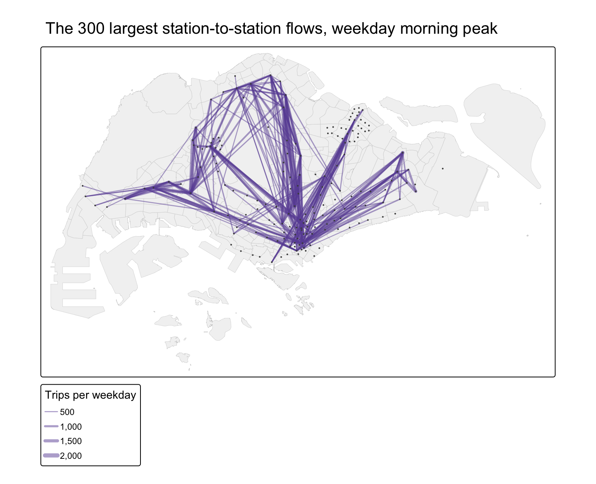
The largest flows are the long radial commutes into the city: from Woodlands, Admiralty and Yishun in the north, from Sengkang and Punggol in the north east, from Tampines and Pasir Ris in the east, and from Boon Lay and Jurong in the west. The other clear group is regional: Choa Chu Kang and Bukit Panjang to Jurong East. The pattern shows that a few strong destinations draw trips from far away. The models therefore need both a destination attraction term and a distance term.
8 Calibrating the spatial interaction models
8.1 Distance and trips
sim_exist %>%
filter(TRIPS > 0) %>%
ggplot(aes(x = log(dist), y = log(TRIPS))) +
geom_point(alpha = 0.05, size = 0.6) +
geom_smooth(method = "lm", colour = "#d7301f") +
labs(x = "log(distance in m)", y = "log(trips)",
title = "Trips fall with distance between stations") +
theme_minimal()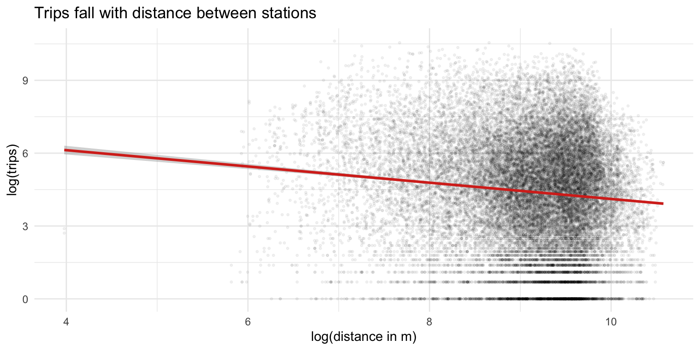
As in Chapter 16, the relationship between trips and distance is close to linear on a log-log scale, which supports the power form of distance decay used in the models.
8.2 Four models
Following Chapter 16, the models are calibrated with glm() and a Poisson family with a log link.
f_unc <- TRIPS ~ log(O_DU) + log(O_BUS) + O_LRT + log(O_LINES) +
log(D_DU) + log(D_RETAIL) + log(D_BUS) + D_LRT + log(D_LINES) +
log(dist)
m_unc <- glm(f_unc, family = poisson(link = "log"), data = sim_exist)
m_orc <- glm(TRIPS ~ ORIGIN + log(D_DU) + log(D_RETAIL) + log(D_BUS) +
D_LRT + log(D_LINES) + log(dist) - 1,
family = poisson(link = "log"), data = sim_exist)
m_dec <- glm(TRIPS ~ DESTIN + log(O_DU) + log(O_BUS) + O_LRT +
log(O_LINES) + log(dist) - 1,
family = poisson(link = "log"), data = sim_exist)
m_dbc <- glm(TRIPS ~ ORIGIN + DESTIN + log(dist),
family = poisson(link = "log"), data = sim_exist)coef_rows <- function(m, name) {
b <- coef(m)
b <- b[!grepl("^(ORIGIN|DESTIN)|Intercept", names(b))]
tibble(term = names(b), !!name := round(b, 3))
}
coef_rows(m_unc, "Unconstrained") %>%
full_join(coef_rows(m_orc, "Origin constrained"), by = "term") %>%
full_join(coef_rows(m_dec, "Destination constrained"), by = "term") %>%
full_join(coef_rows(m_dbc, "Doubly constrained"), by = "term") %>%
kable()| term | Unconstrained | Origin constrained | Destination constrained | Doubly constrained |
|---|---|---|---|---|
| log(O_DU) | 0.117 | NA | 0.119 | NA |
| log(O_BUS) | 1.067 | NA | 1.088 | NA |
| O_LRT | -0.569 | NA | -0.531 | NA |
| log(O_LINES) | 0.994 | NA | 0.990 | NA |
| log(D_DU) | -0.041 | -0.045 | NA | NA |
| log(D_RETAIL) | 0.389 | 0.405 | NA | NA |
| log(D_BUS) | 0.230 | 0.185 | NA | NA |
| D_LRT | -1.436 | -1.627 | NA | NA |
| log(D_LINES) | 0.941 | 0.923 | NA | NA |
| log(dist) | -0.505 | -0.735 | -0.589 | -0.813 |
The coefficients are elasticities: a coefficient of 0.5 on log(D_RETAIL) means that a destination with 10% more shops and food outlets attracts about 5% more trips, other things equal. The signs agree across the models.
- Origins. Stations with more homes and more bus stops in their catchment generate more trips. The bus stop elasticity is much larger than the dwelling unit elasticity, which suggests that feeder buses bring in many passengers from beyond 800 m.
- Destinations. Retail, food and finance POIs and bus stops attract trips. Homes near a destination slightly reduce the trips it attracts, as expected in the morning, when people leave residential areas.
- Network position. Interchanges generate and attract more trips, and LRT stations fewer.
- Distance. The distance coefficient lies between -0.81 and -0.5. Doubling the distance between two stations reduces the trips between them by roughly 30% to 43%.
8.3 Goodness of fit
Following Chapter 16, the R-squared is the squared correlation between observed and fitted trips. The root mean squared error (RMSE) is compared with compare_performance().
CalcRSquared <- function(observed, estimated) {
r <- cor(observed, estimated)
r^2
}
model_list <- list(unconstrained = m_unc, origin_constrained = m_orc,
destination_constrained = m_dec, doubly_constrained = m_dbc)
fit_table <- tibble(model = names(model_list),
r_squared = map_dbl(model_list, ~ CalcRSquared(sim_exist$TRIPS, fitted(.x))),
rmse = map_dbl(model_list, ~ performance_rmse(.x)))
kable(fit_table, digits = 3)| model | r_squared | rmse |
|---|---|---|
| unconstrained | 0.237 | 1600.090 |
| origin_constrained | 0.364 | 1461.198 |
| destination_constrained | 0.408 | 1409.519 |
| doubly_constrained | 0.579 | 1188.227 |
compare_performance(model_list, metrics = "RMSE")# Comparison of Model Performance Indices
Name | Model | RMSE
------------------------------------------
unconstrained | glm | 1600.090
origin_constrained | glm | 1461.198
destination_constrained | glm | 1409.519
doubly_constrained | glm | 1188.227As in Chapter 16, the fit improves as more constraints are added. The doubly constrained model explains 58% of the variation in station-pair trips and the unconstrained model 24%. Single station pairs are hard to predict, because thousands of pairs carry only a handful of trips. What matters for planning is the total at each station, which is checked next.
8.4 Station-level ridership estimation
The fitted trips of the unconstrained model are summed for each station: by origin for entries and by destination for exits.
sim_exist$fit_unc <- fitted(m_unc)
station_fit <- bind_rows(
sim_exist %>% group_by(node = ORIGIN) %>%
summarise(observed = sum(TRIPS), fitted = sum(fit_unc)) %>%
mutate(type = "Entries"),
sim_exist %>% group_by(node = DESTIN) %>%
summarise(observed = sum(TRIPS), fitted = sum(fit_unc)) %>%
mutate(type = "Exits")) %>%
mutate(across(c(observed, fitted), ~ .x / n_weekdays))
station_r2 <- station_fit %>% group_by(type) %>%
summarise(r_squared = cor(observed, fitted)^2)
station_r2# A tibble: 2 × 2
type r_squared
<chr> <dbl>
1 Entries 0.588
2 Exits 0.441ggplot(station_fit, aes(observed, fitted)) +
geom_abline(linetype = "dashed", colour = "grey50") +
geom_point(alpha = 0.6, colour = "#2c7fb8") +
facet_wrap(~ type) +
scale_x_continuous(labels = scales::comma) +
scale_y_continuous(labels = scales::comma) +
labs(x = "Observed per weekday", y = "Fitted per weekday",
title = "Unconstrained model: observed and fitted ridership by station") +
theme_minimal()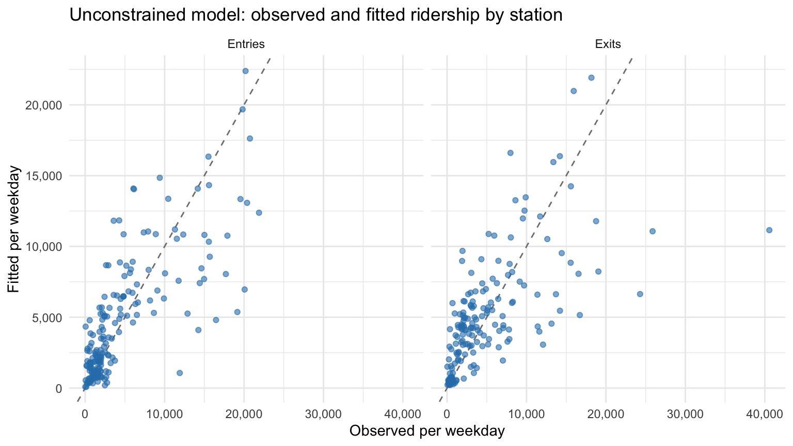
At station level, the unconstrained model explains 59% of the variation in entries and 44% in exits. Points on the dashed line are stations estimated exactly. The model is better at entries, which depend mainly on homes, than at exits, which depend on jobs and schools that the POI data only partly capture. The largest stations lie below the line, so the model underestimates the busiest stations and overestimates the quietest ones. This pull towards the average is typical of a regression model and should be kept in mind when reading the predictions for new stations.
resid_map <- stn_exist %>%
left_join(station_fit %>% filter(type == "Entries"), by = "node") %>%
mutate(ratio = fitted / observed,
error = cut(ratio, c(0, 0.67, 0.9, 1.1, 1.5, Inf),
labels = c("Under by more than 33%", "Under by 10 to 33%",
"Within 10%", "Over by 10 to 50%", "Over by more than 50%")))
tm_shape(mpsz) +
tm_polygons(fill = "grey95", col = "grey80", lwd = 0.3) +
tm_shape(resid_map) +
tm_dots(fill = "error", size = 0.4,
fill.scale = tm_scale_categorical(
values = c("#b2182b", "#ef8a62", "grey70", "#67a9cf", "#2166ac")),
fill.legend = tm_legend(title = "Fitted vs observed entries",
position = tm_pos_in("right", "bottom"))) +
tm_title("Where the unconstrained model under- or overestimates entries")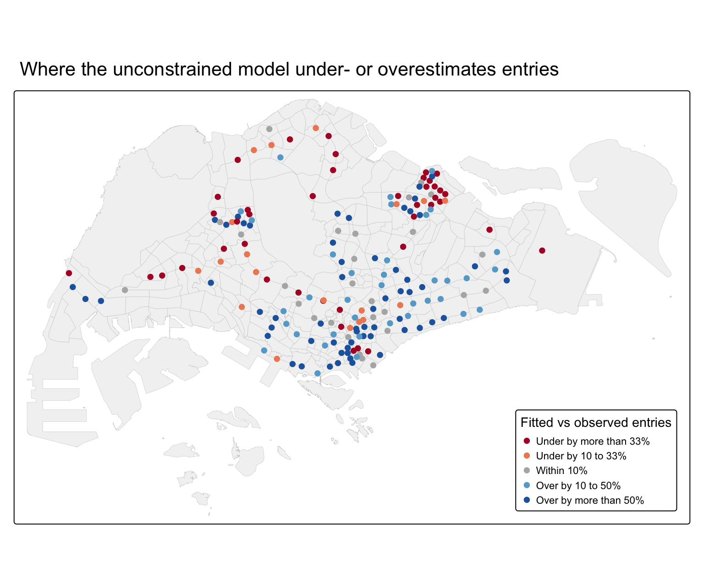
Underestimated stations (red) are mostly in the outer residential towns: Woodlands, Admiralty and Yishun in the north, Boon Lay and Jurong West in the west, and many stations on the Sengkang, Punggol and Bukit Panjang LRT loops. These stations draw passengers from well beyond 800 m, by bus or on the LRT. Overestimated stations (blue) are mostly in the city centre and the city fringe, and at the Tuas end of the East-West Line. There, bus stops and shops are plentiful but few people start a journey in the morning. The pattern shows what the model is missing: the reach of feeder services and the type of land use around a station.
8.5 How well does the model predict a station it has never seen?
The new stations have no observed trips, so the useful question is how well the model predicts a station it was not calibrated on. Each existing station is removed in turn, the unconstrained model is calibrated on the remaining stations, and the removed station’s trips are predicted. This is leave-one-station-out validation.
loso <- map_dfr(stn_exist$node, function(s) {
train <- sim_exist %>% filter(ORIGIN != s, DESTIN != s)
test <- sim_exist %>% filter(ORIGIN == s | DESTIN == s)
m <- glm(f_unc, family = poisson(link = "log"), data = train)
tibble(node = s,
observed = sum(test$TRIPS) / n_weekdays,
predicted = sum(predict(m, test, type = "response")) / n_weekdays)
}) %>%
mutate(abs_pct_error = abs(predicted - observed) / observed)
loso %>% summarise(r_squared = cor(observed, predicted)^2,
median_abs_pct_error = median(abs_pct_error),
within_30pct = mean(abs_pct_error <= 0.3),
within_50pct = mean(abs_pct_error <= 0.5))# A tibble: 1 × 4
r_squared median_abs_pct_error within_30pct within_50pct
<dbl> <dbl> <dbl> <dbl>
1 0.551 0.424 0.330 0.562For a station it has not seen, the model’s prediction of total morning peak ridership (entries plus exits) is within 42% of the observed value for the median station, and within 50% for 56% of stations. This is the honest uncertainty of the predictions in the next section. They are good enough to rank stations and to separate likely busy stations from likely quiet ones, but not to give an exact passenger count.
9 Predicting ridership at the new stations
The unconstrained model is applied to the second spatial interaction data frame, with all 214 stations.
sim_future$fit <- predict(m_unc, newdata = sim_future, type = "response")
pred_station <- sim_future %>% group_by(node = ORIGIN) %>%
summarise(entries = sum(fit) / n_weekdays) %>%
left_join(sim_future %>% group_by(node = DESTIN) %>%
summarise(exits = sum(fit) / n_weekdays), by = "node") %>%
mutate(total = entries + exits) %>%
left_join(attr_future %>% select(node, DU, RETAIL, BUS), by = "node")
pred_new <- stn_new %>% left_join(pred_station, by = "node") %>% arrange(desc(total))
pred_new %>% st_drop_geometry() %>%
mutate(across(c(entries, exits, total, DU), round)) %>%
select(name, status, entries, exits, total, DU, RETAIL, BUS) %>%
kable()| name | status | entries | exits | total | DU | RETAIL | BUS |
|---|---|---|---|---|---|---|---|
| Serangoon North | CRL | 13081 | 3770 | 16850 | 11141 | 25 | 38 |
| Pasir Ris East | CRL | 12405 | 4224 | 16629 | 13240 | 53 | 43 |
| Tampines North | CRL | 9601 | 3828 | 13429 | 9429 | 38 | 33 |
| Tavistock | CRL | 7549 | 4813 | 12362 | 4414 | 52 | 25 |
| Tengah Park | JRL | 6193 | 4394 | 10587 | 8788 | 68 | 22 |
| Choa Chu Kang West | JRL | 7963 | 2374 | 10337 | 12022 | 14 | 28 |
| Teck Ghee | CRL | 5716 | 3795 | 9511 | 11153 | 38 | 17 |
| Pandan Reservoir | JRL | 6084 | 2923 | 9007 | 4678 | 25 | 23 |
| Tengah Plantation | JRL | 6339 | 2300 | 8639 | 12077 | 14 | 22 |
| Jurong West | JRL | 5349 | 2750 | 8099 | 7962 | 26 | 21 |
| Defu | CRL | 4559 | 2918 | 7477 | 4213 | 20 | 16 |
| Bukit Batok West | JRL | 4004 | 3179 | 7183 | 5670 | 34 | 15 |
| Toh Guan | JRL | 3382 | 2411 | 5793 | 8826 | 20 | 12 |
| Gek Poh | JRL | 3320 | 2245 | 5565 | 7080 | 21 | 14 |
| Bahar Junction | JRL | 3376 | 1927 | 5303 | 6574 | 13 | 14 |
| Corporation | JRL | 2685 | 2195 | 4880 | 7312 | 20 | 11 |
| Nanyang Crescent | JRL | 678 | 3593 | 4271 | 0 | 46 | 9 |
| Enterprise | JRL | 1873 | 2367 | 4240 | 0 | 7 | 21 |
| Jurong Town Hall | JRL | 1261 | 2171 | 3432 | 0 | 6 | 13 |
| Tawas | JRL | 1752 | 1414 | 3165 | 2076 | 8 | 9 |
| Loyang | CRL | 1352 | 1555 | 2907 | 0 | 3 | 16 |
| Nanyang Gateway | JRL | 614 | 1904 | 2518 | 0 | 9 | 8 |
| Tukang | JRL | 1202 | 1290 | 2493 | 0 | 2 | 14 |
| Hong Kah | JRL | 1372 | 967 | 2339 | 4373 | 3 | 6 |
| Peng Kang Hill | JRL | 502 | 1575 | 2077 | 118 | 15 | 4 |
| Aviation Park | CRL | 419 | 1186 | 1605 | 0 | 4 | 6 |
| Jurong Pier | JRL | 733 | 852 | 1585 | 0 | 0 | 9 |
| Jurong Hill | JRL | 396 | 999 | 1395 | 0 | 2 | 5 |
| Tengah | JRL | 156 | 774 | 930 | 547 | 4 | 0 |
existing_fit <- stn_exist %>%
left_join(station_fit %>% group_by(node) %>%
summarise(total = sum(fitted)), by = "node")
tm_shape(mpsz) +
tm_polygons(fill = "grey95", col = "grey80", lwd = 0.3) +
tm_shape(existing_fit) +
tm_bubbles(size = "total", fill = "grey60", fill_alpha = 0.4, col = "white",
size.scale = tm_scale_continuous(values.scale = 1.2,
limits = c(0, max(existing_fit$total))),
size.legend = tm_legend_hide()) +
tm_shape(pred_new %>% mutate(status = factor(status, levels = c("JRL", "CRL")))) +
tm_bubbles(size = "total", fill = "status", col = "white",
size.scale = tm_scale_continuous(values.scale = 1.2,
limits = c(0, max(existing_fit$total))),
fill.scale = tm_scale_categorical(values = c("#0099aa", "#97c616")),
size.legend = tm_legend(title = "Entries + exits per weekday,\n6:00 to 9:59"),
fill.legend = tm_legend(title = "New station")) +
tm_title("Predicted morning peak ridership at the new stations (existing stations in grey)")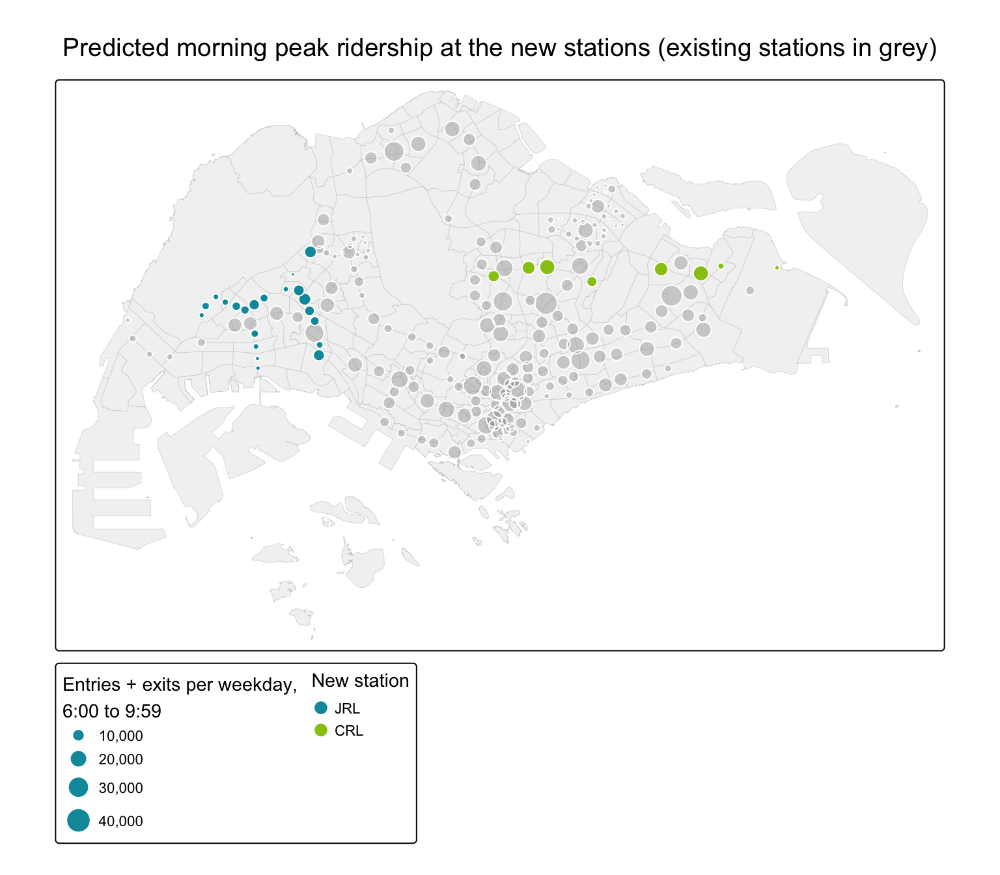
The coloured circles are the new stations. The grey circles are the fitted values for existing stations, drawn on the same scale for comparison. The busiest new stations are the CRL stations that sit inside established HDB towns: Serangoon North, Pasir Ris East, Tampines North. They are predicted to be as busy as a typical existing town station, because each will have roughly 9,000 to 13,000 HDB homes within walking distance, many of which are more than a ten-minute walk from any station today. On the JRL, the busiest are Tengah Park, Choa Chu Kang West, Pandan Reservoir, Tengah Plantation, in or next to Choa Chu Kang, Bukit Batok, Tengah and Jurong East.
The quietest new stations are those with few or no homes nearby: Peng Kang Hill, Aviation Park, Jurong Pier, Jurong Hill, Tengah. They are in the Jurong industrial estate, next to Nanyang Technological University, at the airport fringe or in Tengah, where most blocks are too new to be in the building data. These are the stations most at risk of the “ghost station” situation, at least until the surrounding development is complete.
pred_new %>% st_drop_geometry() %>%
select(name, status, entries, exits) %>%
pivot_longer(c(entries, exits), names_to = "direction", values_to = "trips") %>%
mutate(name = fct_reorder(name, trips, sum)) %>%
ggplot(aes(x = trips, y = name, fill = direction)) +
geom_col() +
facet_grid(status ~ ., scales = "free_y", space = "free_y") +
scale_fill_manual(values = c(entries = "#d7301f", exits = "#2c7fb8")) +
scale_x_continuous(labels = scales::comma) +
labs(x = "Predicted trips per weekday, 6:00 to 9:59", y = NULL, fill = NULL,
title = "Predicted morning peak ridership by new station") +
theme_minimal() +
theme(legend.position = "bottom")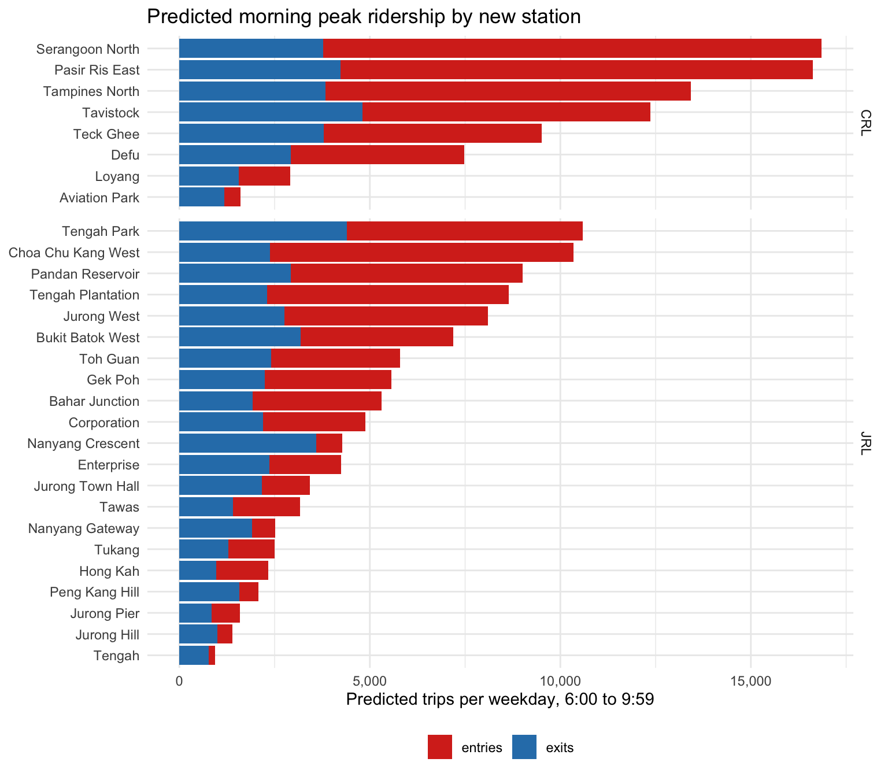
The bar chart separates entries (people starting a trip) from exits (people arriving). Residential stations such as Serangoon North are dominated by entries. A few stations are mainly destinations: Nanyang Crescent, Enterprise, Jurong Town Hall. These are stations at Nanyang Technological University and in the Jurong industrial estate, and they would be busiest in the opposite direction in the evening.
10 Impact on existing stations
The new stations affect existing stations in two ways. They take over part of the existing stations’ catchments, and they compete with existing stations as destinations.
10.1 Catchment change
catchment_change <- attr_exist %>%
select(node, DU_before = DU) %>%
left_join(attr_future %>% select(node, DU_after = DU), by = "node") %>%
mutate(DU_lost = DU_before - DU_after,
pct_lost = if_else(DU_before > 0, DU_lost / DU_before, 0)) %>%
arrange(desc(DU_lost))
catchment_change %>% filter(DU_lost > 0) %>%
left_join(stn_names, by = "node") %>%
mutate(across(c(DU_before, DU_after, DU_lost), round),
pct_lost = round(100 * pct_lost)) %>%
select(name, node, DU_before, DU_after, DU_lost, pct_lost) %>%
kable()| name | node | DU_before | DU_after | DU_lost | pct_lost |
|---|---|---|---|---|---|
| South View | BP2 | 10101 | 4133 | 5968 | 59 |
| Ang Mo Kio | NS16 | 22410 | 17181 | 5229 | 23 |
| Boon Lay | EW27 | 10766 | 6288 | 4478 | 42 |
| Jurong East | EW24/NS1 | 4041 | 408 | 3633 | 90 |
| Chinese Garden | EW25 | 7697 | 4530 | 3167 | 41 |
| Pioneer | EW28 | 14608 | 12585 | 2023 | 14 |
| Lakeside | EW26 | 12459 | 10462 | 1997 | 16 |
| Mayflower | TE6 | 10403 | 8440 | 1963 | 19 |
| Bukit Batok | NS2 | 16938 | 15239 | 1699 | 10 |
| Hougang | NE14 | 16777 | 15192 | 1585 | 9 |
| Tampines East | DT33 | 20022 | 19334 | 688 | 3 |
| Choa Chu Kang | NS4/BP1 | 4635 | 3994 | 641 | 14 |
| Pasir Ris | EW1 | 10008 | 9522 | 486 | 5 |
| Bright Hill | TE7 | 2556 | 2403 | 153 | 6 |
| Kovan | NE13 | 4253 | 4157 | 96 | 2 |
# assign every HDB block to its nearest station within 800 m, before and after
nearest_node <- function(stations) {
i <- st_nearest_feature(hdb_pt, stations)
d <- as.numeric(st_distance(hdb_pt, stations[i, ], by_element = TRUE))
if_else(d <= 800, stations$node[i], NA_character_)
}
hdb_change <- hdb_pt %>%
mutate(before = nearest_node(stn_exist),
after = nearest_node(stn_future),
change = case_when(
is.na(before) & !is.na(after) ~ "Newly within 800 m of a station",
!is.na(before) & before != after ~ "Moves from an existing to a new station",
!is.na(before) ~ "No change",
TRUE ~ "Still beyond 800 m")) %>%
filter(change != "Still beyond 800 m")
count(st_drop_geometry(hdb_change), change, wt = du) change n
1 Moves from an existing to a new station 33806.0
2 Newly within 800 m of a station 107886.5
3 No change 819978.5tm_shape(mpsz) +
tm_polygons(fill = "grey97", col = "grey85", lwd = 0.3) +
tm_shape(hdb_change %>% mutate(change = factor(change, levels = c(
"No change", "Moves from an existing to a new station",
"Newly within 800 m of a station")))) +
tm_dots(fill = "change", size = 0.05,
fill.scale = tm_scale_categorical(values = c("grey75", "#e6550d", "#31a354")),
fill.legend = tm_legend(title = "HDB block",
position = tm_pos_in("right", "bottom"))) +
tm_shape(stn_new) +
tm_dots(fill = "black", size = 0.15) +
tm_title("How the new stations change station catchments (HDB blocks)")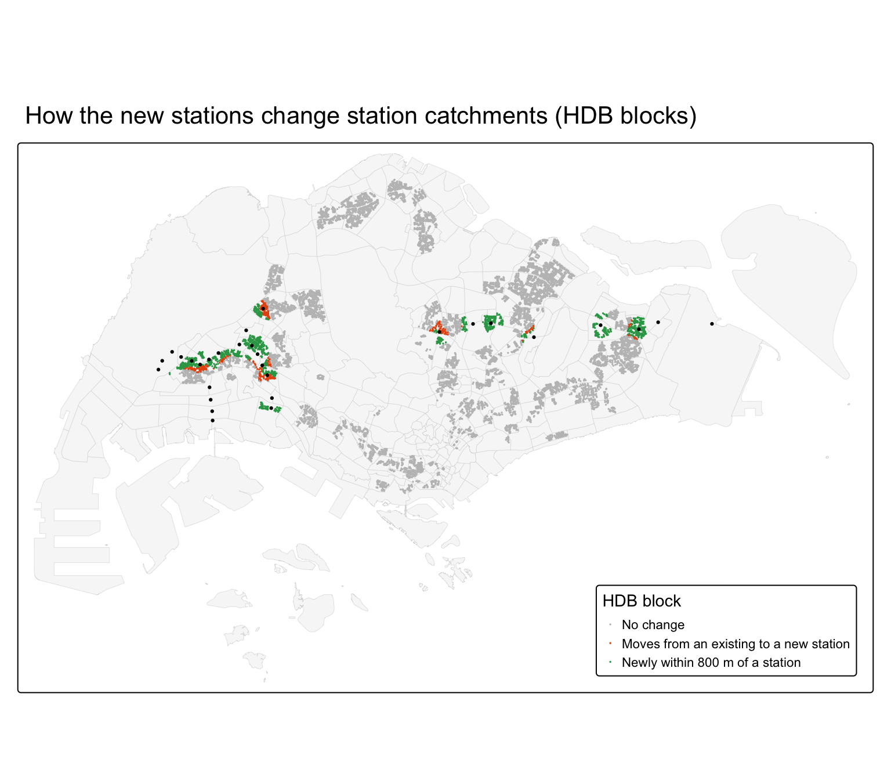
Each dot is an HDB block. Green blocks are homes that are more than 800 m from any station today but will be within walking distance of a new station. They are the new market of the two lines, about 107,900 dwelling units, mainly in Jurong West, Bukit Batok, Pasir Ris, Tampines North and Serangoon North. Orange blocks, about 33,800 dwelling units, are close to an existing station today but will be even closer to a new one. These are the homes that existing stations are likely to lose. In the west, the loss falls on South View, Boon Lay, Jurong East, Chinese Garden and Bukit Batok. In the north east, it falls on Ang Mo Kio, Mayflower and Hougang. Grey blocks keep their current station.
10.2 Competition for passengers
To isolate the effect of new destinations, the observed number of trips leaving each existing station is held fixed. The origin-constrained model’s destination coefficients then share each origin’s trips among all destinations, with and without the new stations. This is the probabilistic form of the model: the share of trips from origin \(i\) that go to destination \(j\) is
\[P_{ij} = \frac{A_j \, d_{ij}^{\beta}}{\sum_k A_k \, d_{ik}^{\beta}}\]
where \(A_j\) combines the destination attributes with their calibrated coefficients and \(\beta\) is the calibrated distance coefficient.
b <- coef(m_orc)
b <- b[c("log(D_DU)", "log(D_RETAIL)", "log(D_BUS)", "D_LRT", "log(D_LINES)", "log(dist)")]
origin_totals <- sim_exist %>% group_by(ORIGIN) %>% summarise(O = sum(TRIPS))
allocate <- function(sim) {
sim %>%
mutate(w = exp(b[1] * log(D_DU) + b[2] * log(D_RETAIL) + b[3] * log(D_BUS) +
b[4] * D_LRT + b[5] * log(D_LINES) + b[6] * log(dist))) %>%
inner_join(origin_totals, by = "ORIGIN") %>%
group_by(ORIGIN) %>%
mutate(trips = O * w / sum(w)) %>%
ungroup() %>%
group_by(node = DESTIN) %>%
summarise(trips = sum(trips) / n_weekdays)
}
competition <- allocate(sim_exist) %>% rename(before = trips) %>%
left_join(allocate(sim_future) %>% rename(after = trips), by = "node") %>%
mutate(change = after - before, pct_change = change / before)
share_new <- allocate(sim_future) %>% filter(node %in% stn_new$node) %>%
summarise(share = sum(trips)) %>% pull(share) / sum(competition$before)
share_new[1] 0.07232197competition <- competition %>% left_join(stn_names, by = "node")
competition %>% arrange(pct_change) %>% slice(1:10) %>%
mutate(across(c(before, after, change), round), pct_change = round(100 * pct_change)) %>%
select(name, node, before, after, change, pct_change) %>%
kable()| name | node | before | after | change | pct_change |
|---|---|---|---|---|---|
| South View | BP2 | 672 | 456 | -216 | -32 |
| Chinese Garden | EW25 | 3369 | 2521 | -848 | -25 |
| Boon Lay | EW27 | 4838 | 3670 | -1168 | -24 |
| Bukit Batok | NS2 | 4789 | 3791 | -998 | -21 |
| Lakeside | EW26 | 4177 | 3457 | -721 | -17 |
| Mayflower | TE6 | 3318 | 2792 | -525 | -16 |
| Ang Mo Kio | NS16 | 7289 | 6416 | -873 | -12 |
| Bright Hill | TE7 | 2384 | 2123 | -261 | -11 |
| Pioneer | EW28 | 4353 | 3898 | -455 | -10 |
| Jurong East | EW24/NS1 | 11836 | 10697 | -1139 | -10 |
comp_map <- stn_exist %>%
left_join(competition, by = "node") %>%
mutate(loss = cut(-pct_change, c(-Inf, 0.10, 0.15, 0.20, Inf),
labels = c("Less than 10%", "10 to 15%", "15 to 20%", "More than 20%")))
tm_shape(mpsz) +
tm_polygons(fill = "grey95", col = "grey80", lwd = 0.3) +
tm_shape(comp_map) +
tm_dots(fill = "loss", size = 0.4,
fill.scale = tm_scale_categorical(
values = c("grey80", "#fc8d59", "#d7301f", "#7f0000")),
fill.legend = tm_legend(title = "Share of morning arrivals\nlost to new stations",
position = tm_pos_in("right", "bottom"))) +
tm_shape(stn_new) +
tm_dots(fill = "black", size = 0.12, shape = 4) +
tm_title("Existing stations that lose arriving passengers to the new stations")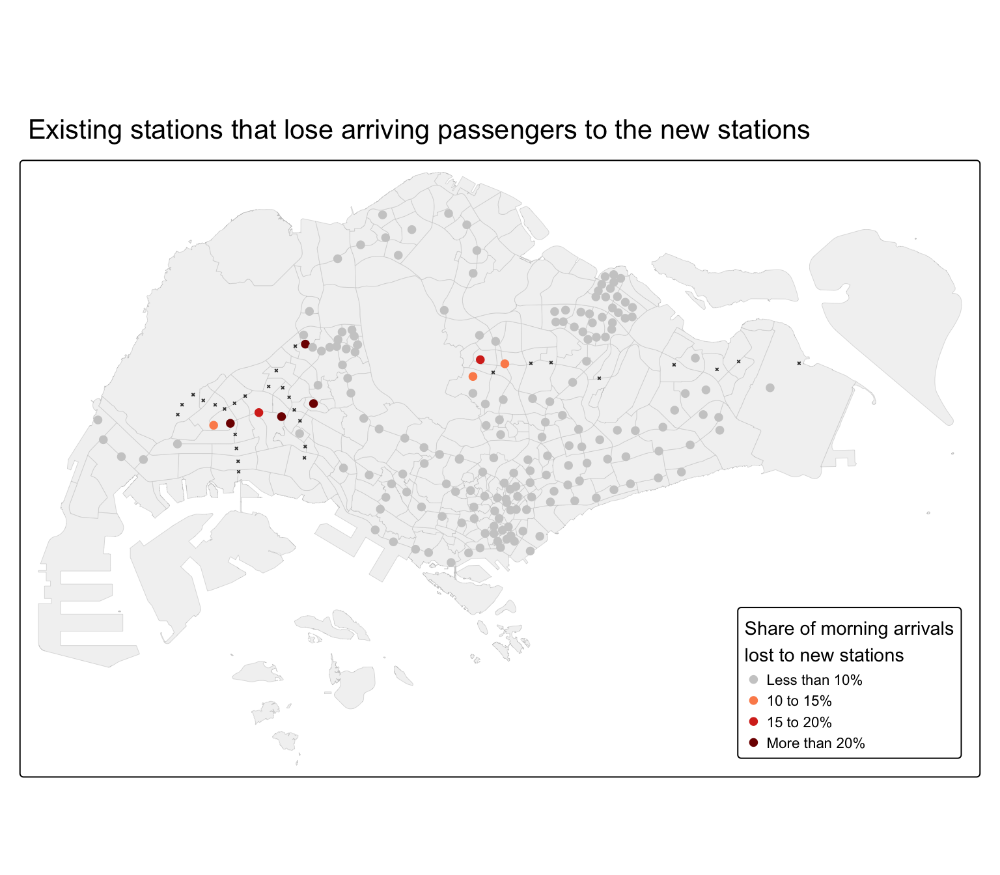
Holding the trips from each existing station fixed, the new stations would attract about 7.2% of the morning peak arrivals that now end at existing stations. Most existing stations lose between 5% and 10% (grey). This even spread is partly a property of the share model: every new destination takes a proportional share from all the others, even from far away. The more useful signal is where the loss is clearly above this level. The stations that lose most (dark red) are next to a new station: South View, Chinese Garden, Boon Lay, Bukit Batok, Lakeside. Their passengers would arrive at a new station that is closer to where they are going, for example a JRL station inside Jurong West instead of Boon Lay. Ang Mo Kio and Bright Hill on the CRL are also above the average. The risk of losing passengers is concentrated at the stations next to the new lines, not spread across the system.
11 Value-added analysis: does distance matter the same everywhere?
All four models in Chapter 16 assume one distance coefficient for the whole island. People who live in different places may, however, react to distance differently. If a town has a strong local centre, its residents make many short trips. If it has few local jobs, they travel further. To test this, the origin-constrained model is calibrated with a separate distance coefficient for every origin station, by adding an interaction between the origin and log distance. This is a local form of the model, in the spirit of origin-specific spatial interaction models (Fotheringham, 1981).
m_local <- glm(TRIPS ~ ORIGIN + ORIGIN:log(dist) + log(D_DU) + log(D_RETAIL) +
log(D_BUS) + D_LRT + log(D_LINES) - 1,
family = poisson(link = "log"), data = sim_exist)
local_beta <- tibble(term = names(coef(m_local)), beta = coef(m_local)) %>%
filter(str_detect(term, ":log\\(dist\\)")) %>%
mutate(node = str_remove_all(term, "^ORIGIN|:log\\(dist\\)$")) %>%
select(node, beta) %>%
left_join(stn_names, by = "node")
c(r_squared_global = CalcRSquared(sim_exist$TRIPS, fitted(m_orc)),
r_squared_local = CalcRSquared(sim_exist$TRIPS, fitted(m_local)))r_squared_global r_squared_local
0.3637462 0.3772487 summary(local_beta$beta) Min. 1st Qu. Median Mean 3rd Qu. Max.
-2.1573 -1.0581 -0.6689 -0.7454 -0.3918 0.3488 bind_rows(local_beta %>% arrange(beta) %>% slice(1:8) %>% mutate(group = "Steepest"),
local_beta %>% arrange(desc(beta)) %>% slice(1:8) %>% mutate(group = "Flattest")) %>%
mutate(beta = round(beta, 2)) %>% select(group, name, node, beta) %>% kable()| group | name | node | beta |
|---|---|---|---|
| Steepest | Bangkit | BP9 | -2.16 |
| Steepest | Fajar | BP10 | -2.16 |
| Steepest | Teck Lee | PW2 | -2.05 |
| Steepest | Jelapang | BP12 | -2.04 |
| Steepest | Segar | BP11 | -2.02 |
| Steepest | Teck Whye | BP4 | -1.83 |
| Steepest | Pending | BP8 | -1.83 |
| Steepest | Tongkang | SW7 | -1.78 |
| Flattest | Aljunied | EW9 | 0.35 |
| Flattest | Caldecott | CC17/TE9 | 0.31 |
| Flattest | Lavender | EW11 | 0.24 |
| Flattest | Kallang | EW10 | 0.17 |
| Flattest | Bendemeer | DT23 | 0.09 |
| Flattest | Jalan Besar | DT22 | 0.07 |
| Flattest | Marymount | CC16 | 0.01 |
| Flattest | Farrer Park | NE8 | 0.00 |
beta_map <- stn_exist %>% left_join(local_beta, by = "node")
tm_shape(mpsz) +
tm_polygons(fill = "grey95", col = "grey80", lwd = 0.3) +
tm_shape(beta_map) +
tm_dots(fill = "beta", size = 0.45,
fill.scale = tm_scale_intervals(style = "quantile", n = 5,
values = "brewer.rd_yl_bu"),
fill.legend = tm_legend(title = "Local distance\ncoefficient",
position = tm_pos_in("right", "bottom"))) +
tm_title("How strongly distance reduces trips, by origin station")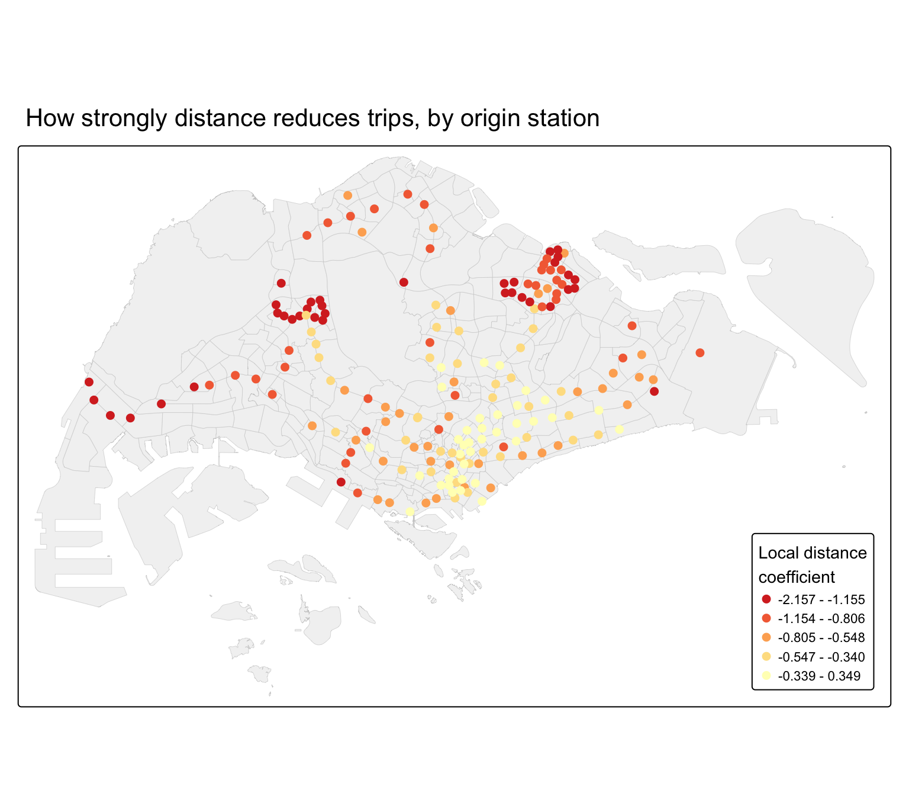
Letting the distance effect vary raises the fit of the origin-constrained model only modestly, from 0.36 to 0.38, but the local coefficients differ a lot, from -2.2 to 0.3. Red stations have a steep distance effect: their passengers mostly make short trips. These are the LRT stations of Bukit Panjang, Sengkang and Punggol, whose passengers ride a few stops to the town interchange, and the Tuas end of the East-West Line. Yellow stations have a weak or even positive distance effect: distance hardly deters their passengers. These are mostly stations in and around the city centre and in the inner east, for example Aljunied, Kallang and Lavender. From there, most destinations are within a short ride, so a little more distance makes little difference.
For the new lines this has a practical meaning. The JRL serves the west, where the existing stations already show a steep distance effect, so its stations are likely to carry mostly trips within the Jurong region. A single island-wide distance coefficient may therefore underestimate short local trips on the JRL and overestimate long ones.
12 Integrated findings and discussion
The analysis answers the three objectives of the exercise.
- Calibration. The morning peak trips between stations follow a clear gravity pattern. More homes and feeder buses at the origin, more shops and services at the destination, and interchanges at either end increase trips, while distance reduces them. The unconstrained model explains about half the variation in station entries. The constrained models fit better but cannot be used for new stations.
- Prediction. The new stations inside established HDB towns are predicted to be the busiest: Serangoon North, Pasir Ris East, Tampines North, Tavistock on the CRL, and Tengah Park, Choa Chu Kang West, Pandan Reservoir, Tengah Plantation on the JRL. Stations with few homes nearby, in the Jurong industrial estate, at the airport fringe and in Tengah, are predicted to be the quietest: Hong Kah, Peng Kang Hill, Aviation Park, Jurong Pier, Jurong Hill, Tengah.
- Impact. The new stations take about 34,000 homes from the edges of existing catchments and attract about 7% of today’s morning arrivals. The effect is concentrated at a handful of stations next to the new lines: South View, Chinese Garden, Boon Lay, Bukit Batok and Lakeside in the west, and Ang Mo Kio and Bright Hill on the CRL.
The leave-one-station-out validation is a reminder of the limits. A median error of about 42% means the predictions should be read as bands (quiet, average, busy) rather than exact numbers. The value-added analysis also shows that distance does not act the same everywhere, which a single island-wide model cannot capture.
13 Implications for transport planning
- Opening priorities. The CRL stations inside existing towns and the JRL stations in Choa Chu Kang, Bukit Batok and Jurong West have ready-made demand. They should open with full service.
- Watch list for low ridership. Hong Kah, Peng Kang Hill, Aviation Park, Jurong Pier, Jurong Hill, Tengah are predicted to have the lowest ridership, mainly because few homes are within walking distance. For these stations, a phased opening, a shell station approach or a lower initial service frequency could be considered until the surrounding area is built. This is the same choice that was made for Hume, Buangkok and Woodleigh. Tengah is a special case: its new blocks are missing from the data, so its true demand is likely to be much higher than predicted here.
- Feeder services. The strong effect of bus stops shows that feeder buses matter. Bus routes in Jurong West, Tengah and Tampines North could be redesigned to feed the new stations rather than the old interchanges.
- Existing stations next to the new lines. South View, Chinese Garden, Boon Lay, Bukit Batok and Lakeside may see fewer passengers in the morning. This could ease crowding at Boon Lay and Jurong East, but at South View, an LRT station with low ridership, it may lower ridership further.
14 Limitations
- Catchments and data. The catchment rule assumes people use the nearest station within 800 m. HDB data cover public housing only. Private housing, jobs and school enrolments are not included, and POIs are only a rough proxy for jobs. Newly completed blocks, especially in Tengah, are missing from the HDB building layer, so the Tengah stations are likely underestimated.
- Distance. Straight-line distance ignores the shape of the network and travel time. The local distance analysis shows that one distance coefficient does not fit everywhere.
- Model. The Poisson model is overdispersed, so standard errors and p-values are too optimistic. The unconstrained model shrinks predictions towards the average, overestimating quiet stations and underestimating busy ones. The leave-one-station-out error of about 42% for the median station is a fair guide to the uncertainty of the predictions. The share model used for the impact analysis spreads part of the loss evenly over all stations, which overstates the loss at stations far from the new lines.
- Time. The model is calibrated on one month and on today’s land use. By the time the new lines open, the land around them, especially in Tengah, Tampines North and Jurong Lake District, will have changed. Trips that change lines inside the network are not observed, so the model describes where trips start and end, not how the trains are loaded between stations. The extra attraction that the seven interchange stations will gain from a new line is not modelled.
15 References
- Fotheringham, A. S. (1981). Spatial structure and distance-decay parameters. Annals of the Association of American Geographers, 71(3), 425 to 436.
- Geofabrik (2026). OpenStreetMap data extract for Malaysia, Singapore and Brunei, 30 October 2026. OpenStreetMap contributors, Open Database License.
- Housing & Development Board (2026). HDB Existing Building; HDB Property Information. data.gov.sg.
- Kam, T. S. (2025). R for Geospatial Data Science and Analytics, Chapters 15 and 16. https://r4gdsa.netlify.app/
- Land Transport Authority (2026). Passenger Volume by Origin Destination Train Stations; Train Station; Train Station Codes and Chinese Names; Bus Stop Location. LTA DataMall.
- Land Transport Authority (2026). Jurong Region Line; Cross Island Line. https://www.lta.gov.sg
- Urban Redevelopment Authority (2025). Amendment to Master Plan 2019 Rail Station layer; Master Plan 2019 Subzone Boundary (No Sea). data.gov.sg.